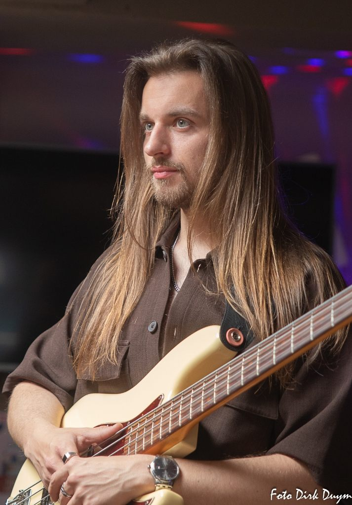
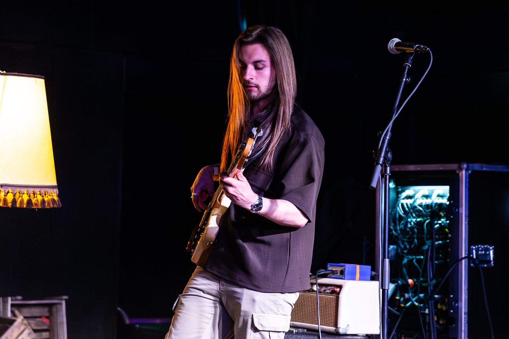
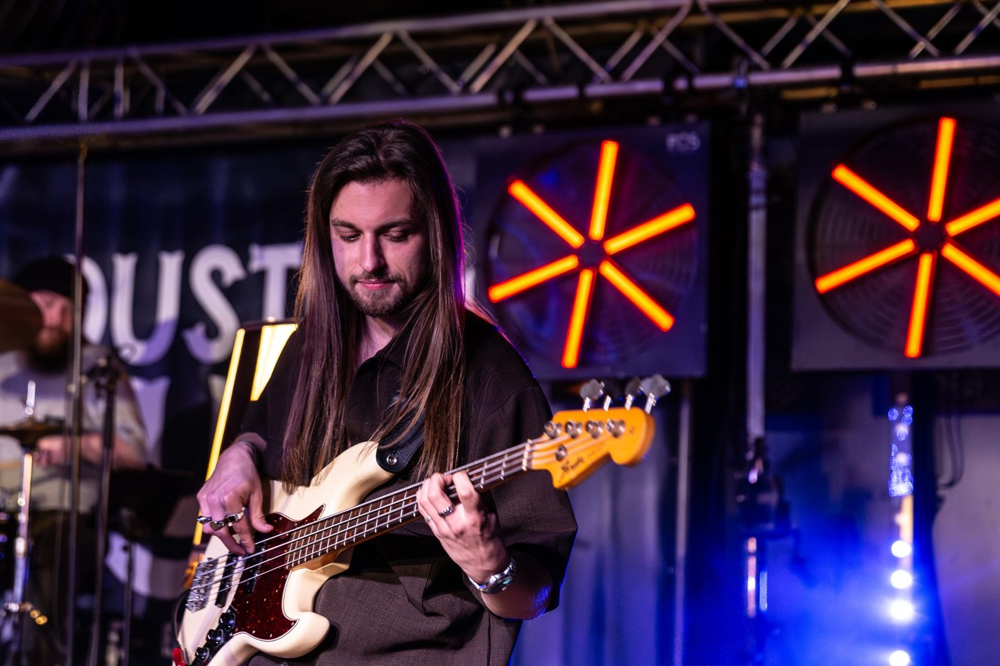
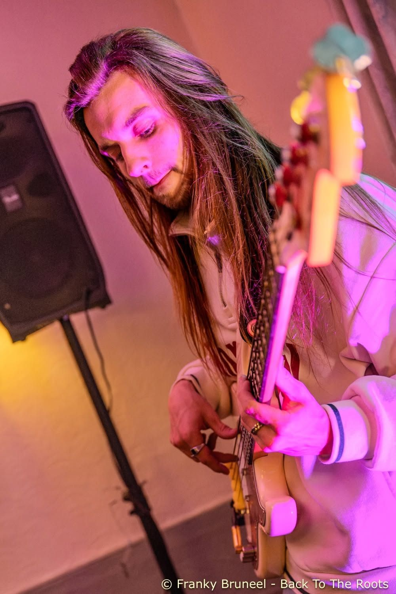
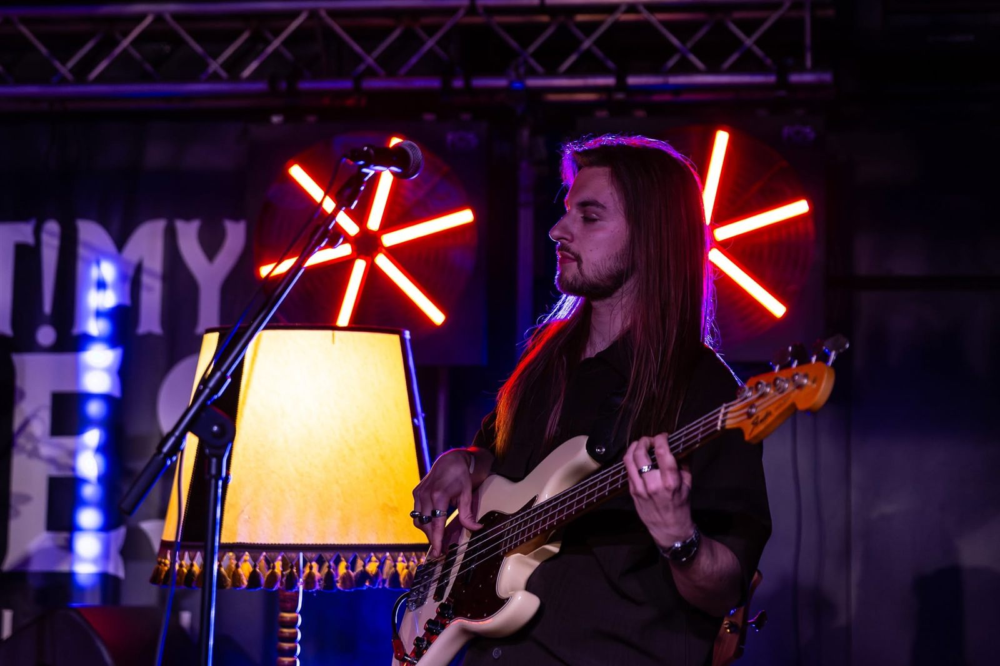
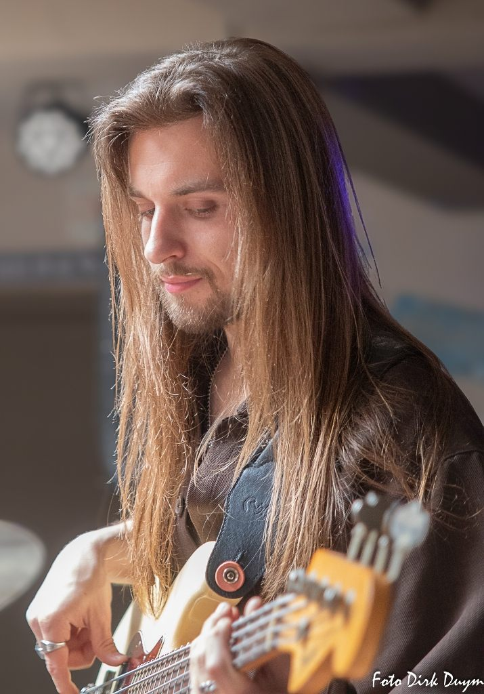
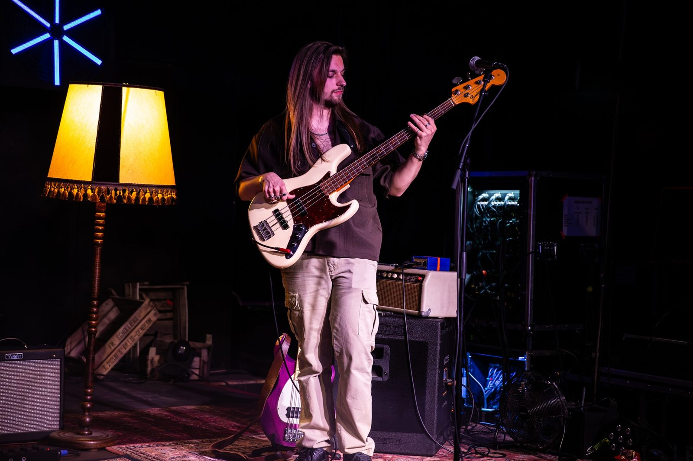
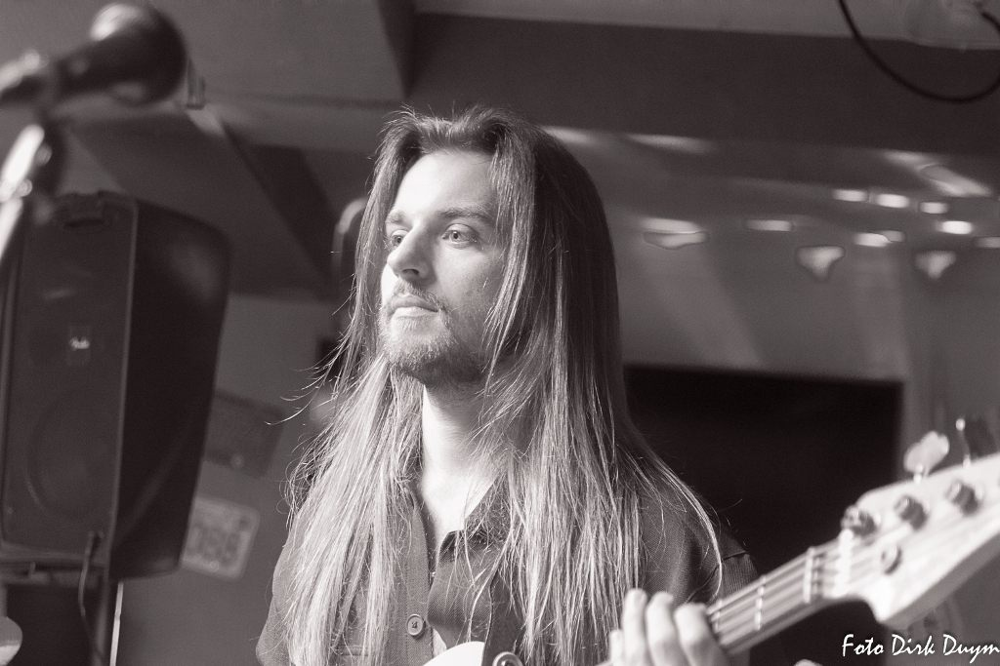

Wolf
d'Anvers
Lage tonen, groove en fundament.
De man achter de lage tonen
Ik ben Wolf d'Anvers, bassist uit Knokke. Ik begon op mijn zestiende met gitaar en stapte in 2017 over op bas, sindsdien is de lage kant mijn thuis. In het Lajos Tauber Trio zorg ik voor het fundament en de groove: blues die ademt, met ruimte om te ademen.
Naast het spelen bouw ik als luthier gitaren en basgitaren onder de naam Wolf Guitars, van houtkeuze tot afwerking en setup. Een deel van wat ik op het podium speel, komt recht uit dat eigen atelier.
"Een goeie baslijn begint bij het hout."
Dat maakt mij een bassist met een dubbele blik: die van de speler die groove zoekt, én die van de bouwer die weet waaróm een instrument grooved. Op zoek naar bas voor je project, of naar een instrument op maat? Je vindt me hieronder.

- Instrument
- Basgitaar & backing vocals
- Band
- Lajos Tauber Trio e.a.
- Genre
- Blues, Pop, Funk, Metal, rock & stoner
- Basis
- Knokke, België
- Ook
- Luthier — Wolf Guitars
Waar je me live vindt
Braderie Westkapelle
Westkapelle · Bearfeet Connection
Tracks & Tr@vellers
Knokke · Lajos Tauber Trio
↳ Meer data volgen. Boek ons voor jouw event via Contact.
Wat ik gedaan heb
Van bluesclubs tot Graspop, van vaste housebands tot studio-opnames, een greep uit waar mijn bas de afgelopen jaren stond.
Lajos Tauber Trio
Bas & backing vocals | blues, live door heel België.
Missy Sippy House Band
Vaste bassist in de house band van de electric blues jams | Missy Sippy, Gent.
MASSE
Invalbassist | ik spring in wanneer de vaste bassist niet kan.
Dani Hart Band
Speelde Graspop Metal Meeting 2025. Momenteel on hold.
Studio 100
Bas-opname voor een tv-programma | nog niet uitgezonden.
La Folie Jolie
Ingevallen op bas: 70 nummers in 2 dagen uit het hoofd geleerd.
TOWAN
Bassist in een stonerrock-band. On hold.
Bombdiggity
Speelde o.a. in de Vooruit (Gent). Band bestaat niet meer.
Wolf Guitars
Custom gitaar- & basbouw, afwerking en setups | mijn eigen atelier.
Privélessen bas
Ik geef privé basles.
Opleiding
Kunstacademie Knokke ('18) · MUDA ('19) · KASK Conservatorium Gent ('20–'25).
Live in beeld







Ik speel wat ik bouw
De bas die ik bespeel, bouw ik zelf. Onder Wolf Guitars maak ik custom gitaren en basgitaren op maat.
Zin om samen te spelen?
Boekingen voor het trio, sessiewerk op bas of een instrument op maat? Stuur gerust een bericht.
wolfdanver@gmail.com